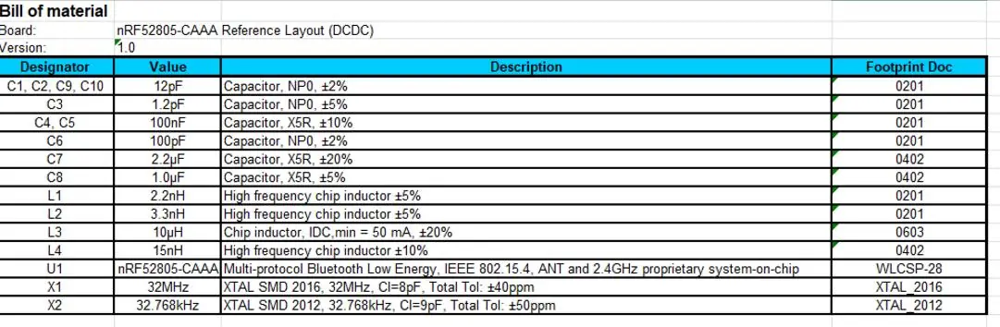
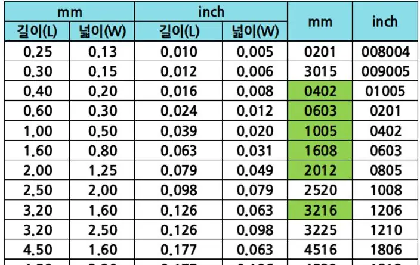
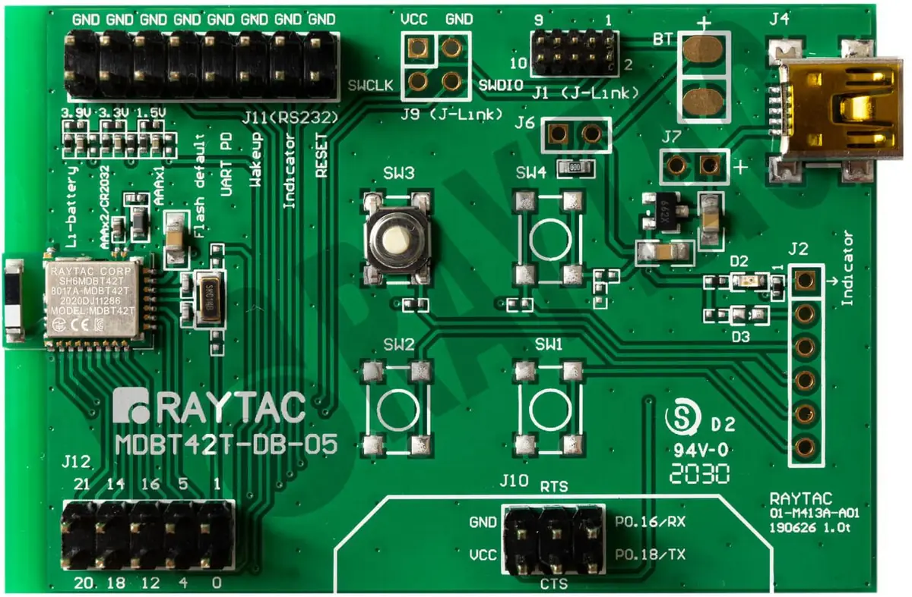

A tiny WLCSP.
A layout that needs the wider view.
Because the WLCSP package uses tiny 0.09mm pads, the antenna pattern type and shield can area must be planned up front to match the build-up PCB specification (2-layer / 4-layer).



The denser the circuit.
The closer the review.
- Build-up A, B, C: Filled via-in-pad process between layers and 50Ω impedance-controlled guide lines.
- RF shield can: Can-lip ground pattern placed at 1.0mm spacing to block external EMI noise.
- Prototype RF tuning: Tune the antenna after the first board build, then perform additional matching when combined with the main board in the second build.